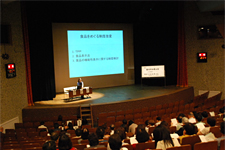
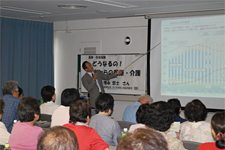
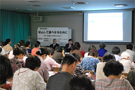
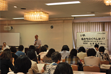
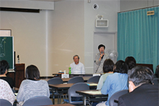

10月10日午後、第49回埼玉県消費者大会の分科会が、埼玉会館小ホールと各会議室の５つの会場で開かれ、全体で約500人が参加しました。助言者の報告、各団体の取り組みや事例報告、参加者の意見交流、質疑がおこなわれ、それぞれ課題を深めました。
＜第1分科会：食＞ 153人参加
食の今を考える～その情報は…？～
助言者 大村 美香さん
（朝日新聞 生活グループ編集委員） |
 |
＜第2分科会：医療・社会保障＞ 132人参加
|  |
どうなるの！これからの医療・介護
助言者 増永 哲士さん
（医療生協さいたま生活協同組合 理事） |
＜第3分科会：消費者問題＞ 83人参加
安心して暮らせるために～甘い言葉にだまされない～
助言者 消費者庁 消費者政策課 後藤 隆昭さん
助言者 松岡 昭任さん
（公益社団法人全国有料老人ホーム協会参与） |
 |
＜第4分科会：くらしと経済＞ 66人参加
|  |
いま、私たちのくらしは！？
～構造改革のゆくえを考える～
助言者 山家 悠紀夫さん（暮らしと経済研究室）
報告者 藤田 孝典さん
（NPO法人ほっとプラス代表理事） |
＜第5分科会：教育・子育て＞ 54人参加
大丈夫？うちの子
～もう一歩、親が視野を広げるために～
助言者 白鳥 勲さん
（さいたま教育文化研究所 副所長） |
 |
|